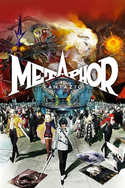

RPG · 2024
Metaphor: ReFantazio
Election-season fantasy politics with Atlus's sharpest combat yet.

Cover: Wikipedia: Metaphor: ReFantazio
Facts
- Released
- 2024-10-11
- Genre
- JRPG
- Category
- RPG
- Platforms
- Nintendo, PC, PlayStation, Xbox
- Developers
- Atlus
- Publishers
- Atlus, Sega
PC requirements
- Minimum
- [object Object]
- Recommended
- [object Object]